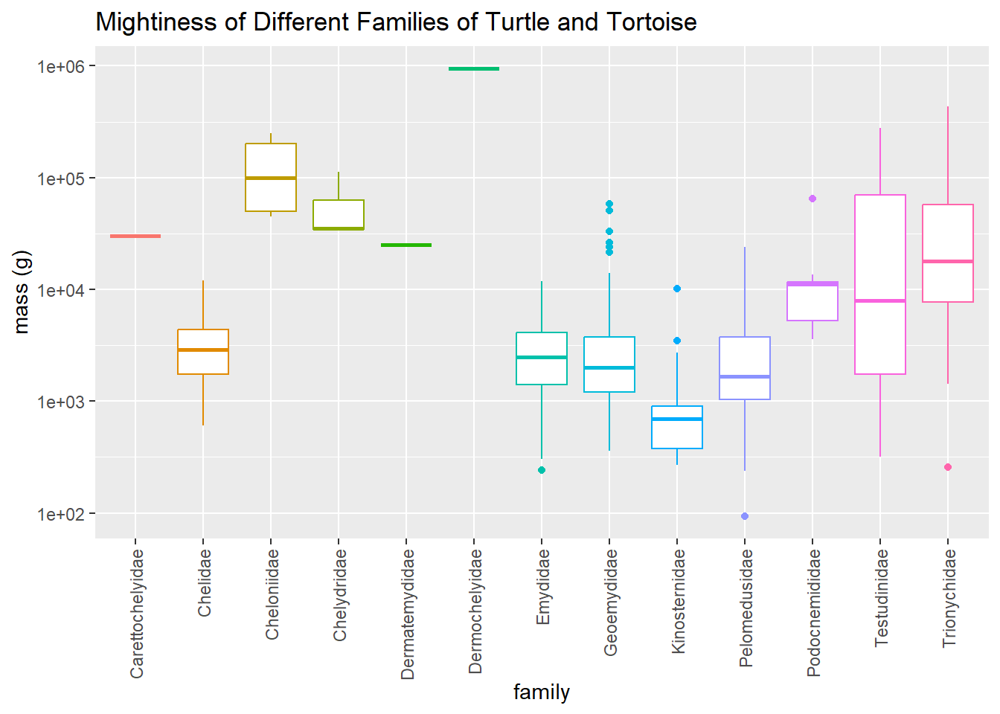

library(tidyverse)
library(skimr)
library(gt)
library(ggthemes)
library(cowplot)
library(magick)30 Day Chart Challenge- Flora and Fauna
R
R-code
Code-Along
turtle
30DayChartChallenge
How Large are Different Types of Turtles?
It is Day 3 of the #30DayChartChallenge. More info can be found at the challenge’s Github page. Today’s theme is flora and fauna. I found a trove of fascinating data at Global Assessment of Reptile Distributions. I chose the dataset on body size/ mass from the paper: “Different solutions lead to similar life history traits across the great divides of the amniote tree of life.” by Shai Meiri, Gopal Murali, Anna Zimin, Lior Shak, Yuval Itescu, Gabriel Caetano, and Uri Roll (Journal of Biological Research-Thessaloniki), 202128: 3.
Okay, let’s go. I’m going to keep the libraries to a minimum.
fauna <- read_csv("animals.csv", show_col_types = FALSE)I’m going to change the class, clade, order, family and bionomial_2020 to factors. I’m keeping those columns and the mass and discarding the rest.
fauna_cleaned <- fauna %>%
select(Class:`body mass (g)`) %>%
select(-`binomial_(original files)`) %>%
rename(mass_g = `body mass (g)`, name = binomial_2020) %>%
mutate(Class = factor(Class),
Clade = factor(Clade),
order = factor(order),
family = factor(family),
name = factor(name))We have data on more than just reptiles, the dataset includes information about birds and mammals as well. But I’m only interested in reptiles.
reptiles <- fauna_cleaned %>%
filter(Class == "Reptilia")table2 <- reptiles %>%
count(Clade, order)
gt(table2)| Clade | order | n |
|---|---|---|
| Crocodylia | Crocodylia | 24 |
| Rhynchocephalia | Rhynchocephalia | 1 |
| Squamata | Squamata (Amphisbaenia) | 195 |
| Squamata | Squamata (Sauria) | 6868 |
| Squamata | Squamata (Serpentes) | 3837 |
| Testudines | Testudines | 315 |
Everyone knows that turtles are the best type of reptile, so let’s filter even further.
turtles <- reptiles %>%
filter(Clade == "Testudines")
table3 <- turtles %>%
count(order, family)
gt(table3)| order | family | n |
|---|---|---|
| Testudines | Carettochelyidae | 1 |
| Testudines | Chelidae | 53 |
| Testudines | Cheloniidae | 6 |
| Testudines | Chelydridae | 3 |
| Testudines | Dermatemydidae | 1 |
| Testudines | Dermochelyidae | 1 |
| Testudines | Emydidae | 47 |
| Testudines | Geoemydidae | 69 |
| Testudines | Kinosternidae | 24 |
| Testudines | Pelomedusidae | 18 |
| Testudines | Podocnemididae | 8 |
| Testudines | Testudinidae | 54 |
| Testudines | Trionychidae | 30 |
Let’s take a look at how big (or mighty, as some might say) the different families of turtles are. There is a very large range of masses so I’m using a log scale.
ggplot(turtles, aes(x = family, y = mass_g, color = family)) +
scale_y_log10() +
geom_boxplot() +
ggtitle("Mightiness of Different Families of Turtle and Tortoise") +
ylab("mass (g)") +
theme(legend.position = "none" ,
axis.text.x = element_text(angle = 90, vjust = 0.5, hjust = 1))
Ollie Burger fun.
pond_turtles <- turtles %>%
filter(family == 'Emydidae') %>%
mutate(box_turtle = ifelse(name == "Terrapene carolina", TRUE, FALSE)) Okay, let’s look at mightiness of the turtles in this family.
turtle_plot_ollie <- pond_turtles %>%
ggplot(aes(x = fct_reorder(name, mass_g), y = mass_g, fill = box_turtle)) +
scale_fill_manual(values=c("#999999", "#E69F00")) +
geom_col(width = 0.7, position = position_dodge(10)) +
coord_flip() +
ylab("mass (g)") +
xlab("") +
ggtitle("Mightiness of Different Turtles in family Emydidae") +
labs(caption = "Data from https://doi.org/10.1186/s40709-021-00134-9") +
theme_classic() +
theme(axis.text = element_text(size = 6)) +
theme(legend.position = "none")
#found how to add an image to my graph on stack overflow
#https://stackoverflow.com/questions/63442933/how-can-i-add-a-logo-to-a-ggplot-visualisation
#img <- image_read("pqtk5r.jpg")
# Set the canvas where you are going to draw the plot and the image
#ggdraw() +
# Draw the plot in the canvas setting the x and y positions, which go from 0,0
# (lower left corner) to 1,1 (upper right corner) and set the width and height of
# the plot. It's advisable that x + width = 1 and y + height = 1, to avoid clipping # the plot
#draw_plot(turtle_plot,x = 0, y = 0.15, width = 1, height = 0.85) +
# Draw image in the canvas using the same concept as for the plot. Might need to
# play with the x, y, width and height values to obtain the desired result
#draw_image(img, x = 0.6, y = 0.35, width = 0.45, height = 0.45) Citation
BibTeX citation:
@online{e. sinks2023,
author = {E. Sinks, Louise},
title = {30 {Day} {Chart} {Challenge-} {Flora} and {Fauna}},
date = {2023-04-03},
url = {https://lsinks.github.io/posts/2023-04-03-chart-challenge-3/day3},
langid = {en}
}
For attribution, please cite this work as:
E. Sinks, Louise. 2023. “30 Day Chart Challenge- Flora and
Fauna.” April 3, 2023. https://lsinks.github.io/posts/2023-04-03-chart-challenge-3/day3.